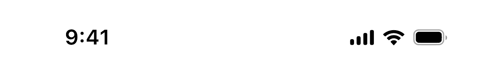

Atla
Avrupa’nın her yerinde
bir tanıdığın var
Avrupa’da yaşayanlar ve gitmeyi planlayanlar
için tek topluluk.
Devam et
Onboarding akışı · taslak 1
Onboarding
- Aidiyet
- Tavsiye
- Kişisel akış
- Erişim
Dört karşılama ekranı tek bir anlatı kurar: dağınık insanlar buluşur, aralarında tavsiye dolaşır, bu bilgi kişisel bir akışa iner ve sonunda bir hizmet doğru topluluğa ulaşır. Her ekran bir kez oynar, döngü yok: her ekran 10 saniye. Tam akışta ekranlar 1,5 sn bekleyip sırayla geçer; telefondaki Devam et beklemeden geçirir.
Sıra
0,00saniye
Kurgu
- 01 Aidiyetküre → rota
- 02 Tavsiyesoru → yanıt
- 03 Kişisel akışyığın → sütun
- 04 Erişimkart → dalga
- Ekran393 × 852
Renkler
- Marka mavisi
#0055FF - Açık mavi
#518EF8 - Buz mavisi
#E8F0FF - Metin
#0B0D12 - İkincil metin
#646B7D
İlk ekranda gerçek portreler ve ikondaki uçak kullanılıyor; diğer sahnelerde kurgu düğüm, kart ve çizgiyle anlatılıyor. Palet açılış akışıyla birebir aynı, koyu temada da doğru çalışır. Boşluk tuşu oynatır ve durdurur, ← → sahne değiştirir. Bitmiş bir ekranda Oynat, o ekranı baştan başlatır.